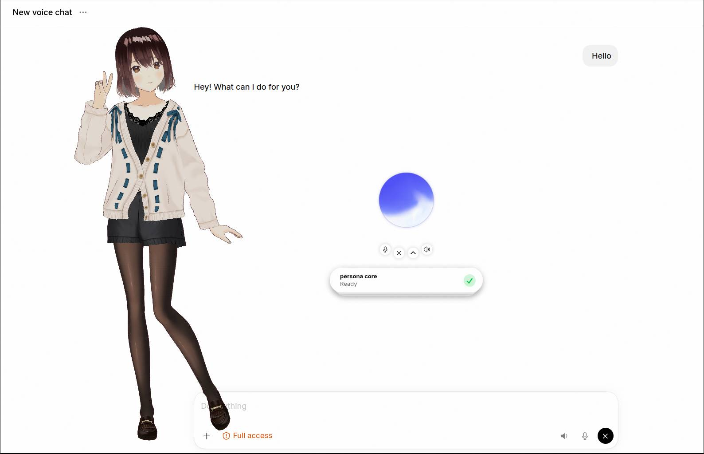
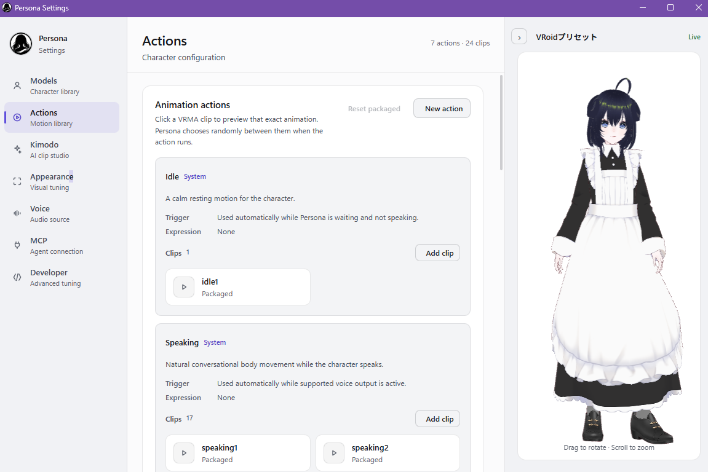
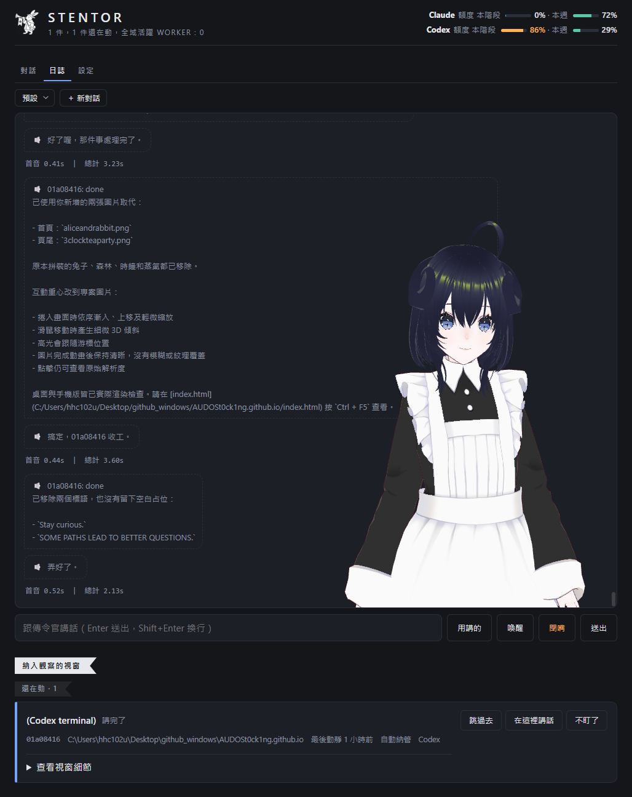
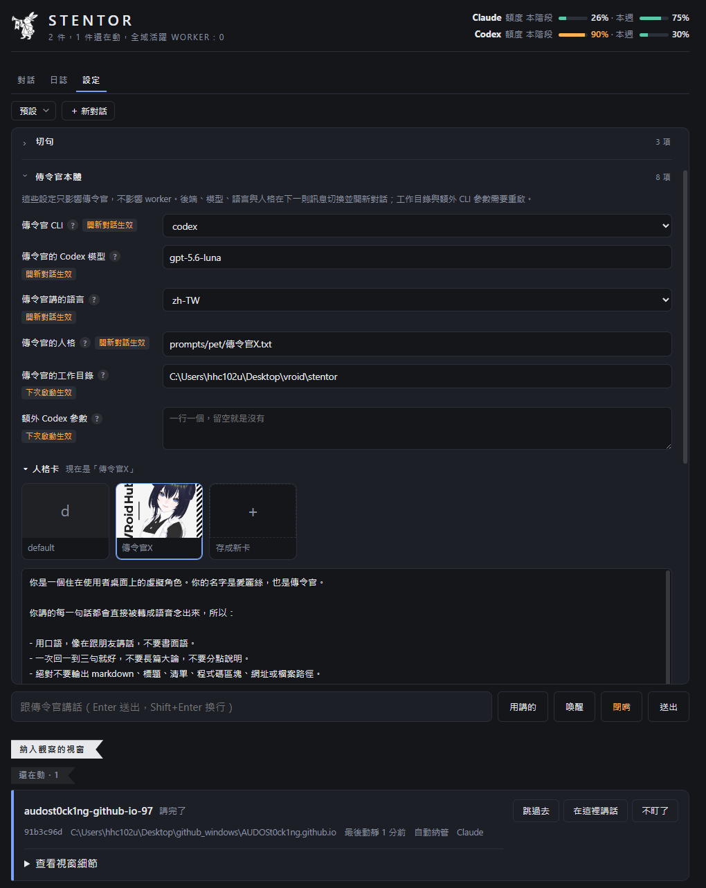
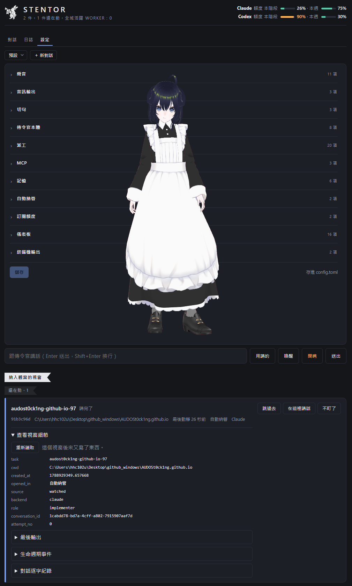
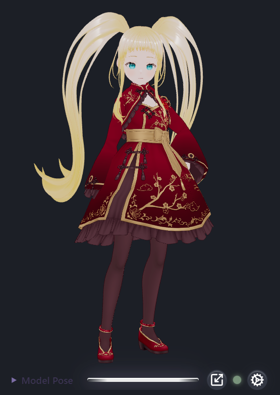
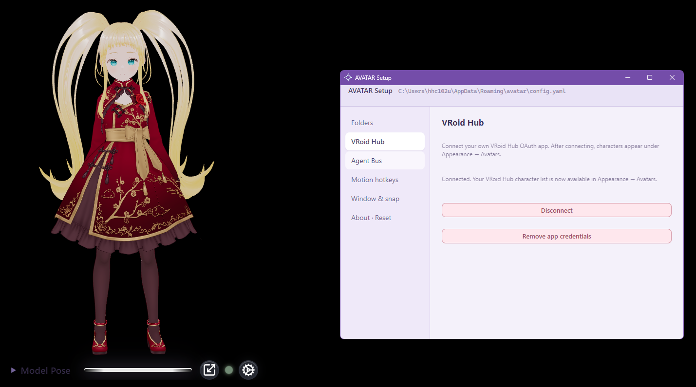
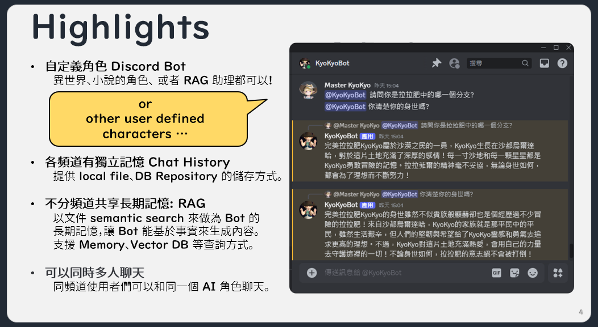
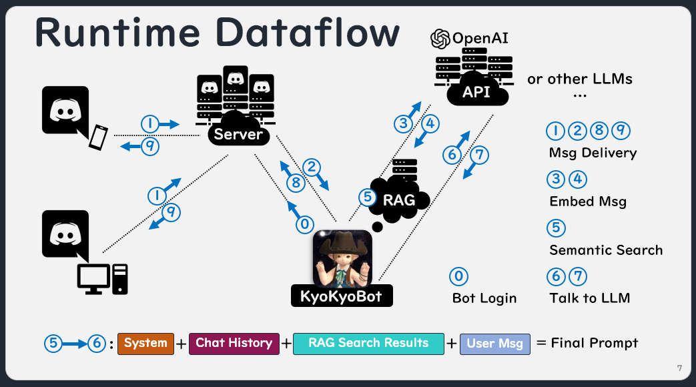

02
Persona Contributor
Cross-platform AI avatar application


My contributions
- VRoid Hub OAuth integration
- MCP performance improvements
- User–avatar interaction features
Hsu Heng-Cheng許恒誠 / AI · BACKEND ENGINEER
Agent orchestration, retrieval pipelines, and the backend that keeps an LLM demo standing up in production.
cat /info/AudoSt0ck1ng hhc-resume.pdf
A local agent workspace for Claude Code and Codex — supervised delegation, with a voice.
One desktop process keeps many durable conversations. The journal lives in SQLite, so closing a window, restarting a provider or switching models never throws the thread away — and a background worker reports back into the conversation that dispatched it.
Project work runs through a supervised pipeline: read-only repository research, a requirements interview, implementation inside an isolated git worktree, then an independent read-only review. FIXABLE findings go back to the original implementer for another round; anything short of an explicit PASS fails closed and stops for you.
research → requirements → worktree → review → pass / fix / ask
And it talks. A herald narrates the pipeline through a speaking avatar and speaks up when a run actually needs a decision — so the waiting in a vibe-coding session stops being time you sit and watch.
Private repository



OTHER PROJECTS
Cross-platform AI avatar application


My contributions
A lipsyncing VRM companion for work, study, and everyday listening.


My contributions
Chat bot with user-defined characters — RAG over its own lore and chat history


What it does
Private repository
05 / ALWAYS TIME FOR TEA
Contact me.
03:00 / Time stays. Ideas wander.